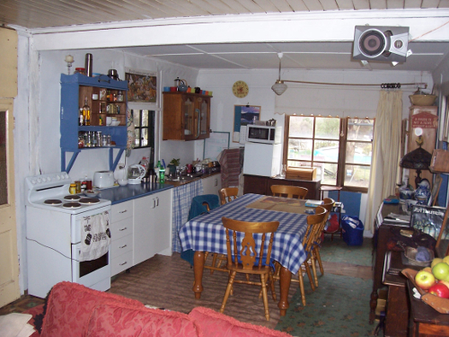
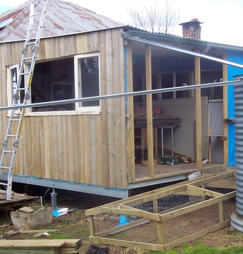

Here's what our kitchen/dining room has looked like since 2012:

While on the outside that corner has been a shed:

(And how did that window break, I hear you ask? It's a sad story of a lack of bracing and a brief gust of wind... a story about a wall falling over.)
Now the wall between the dining room and the shed has been removed:
We moved all the old benches etc into it for the moment so we can live in it for a while before deciding on the final layout. At the moment we have two islands which, as Lesley said, makes our kitchen an archipelago:
Feedback on how this layout grabs you is welcome.
Also we dragged the last 2 tanks that had been around the house down to the bottom cluster, where there are now 7 tanks:
This is where 5 of the tanks were when we bought the house:
Feedback on how this layout grabs you is welcome.
And now - no tanks!
What was that? How did I move these tanks you ask?
Actually, it was done a couple of months ago, but the camera hasn't been working...:
This is what the same room looked like in 2007 when we bought the house:
And one of the kittens has become a permanent resident:
His name is Pippin.
________________________________________________
Starting to paint the lounge
March 27 2014
It's proceeding slowly as usual, but it's always nice to see a visible difference:
Oh, and here are 5 kittens in a box. Along with their mum, we're fostering them for a while till they can go out to good homes...
________________________________________________
Happy New Year
January 5 2014
So back to the old front page then. The "Snapshot October 2013" page is now a stand-alone page hereand it has its own entry in the "Pages" menu on the left of your screen.
Lesley has been hard at work creating the new back garden:
Gary kindly let us cut down a section of our common fence that was right behind the house so we could use more of the area (but the property boundaries remain the same)
Meanwhile I've been sprucing up the caravan for our next trip to Wallaga Lake in Feb: